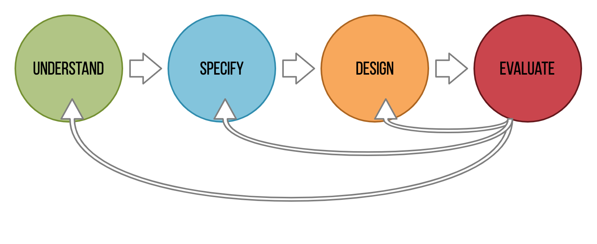
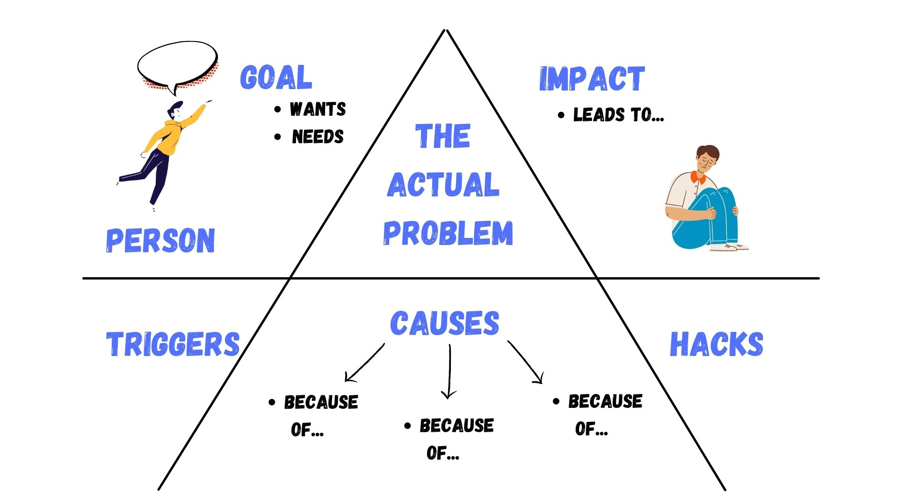
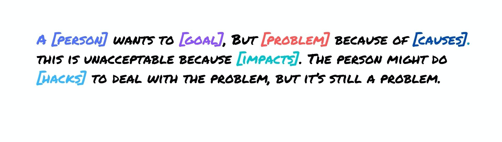
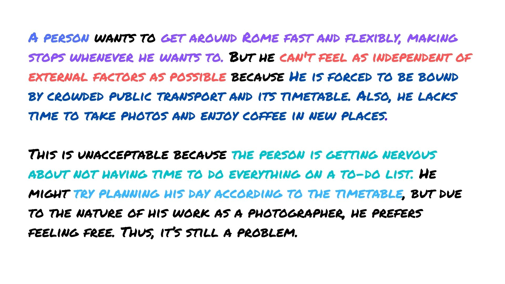
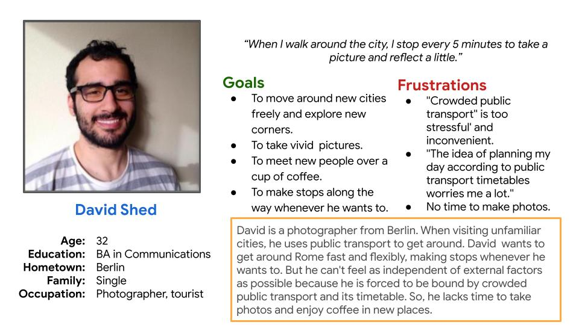
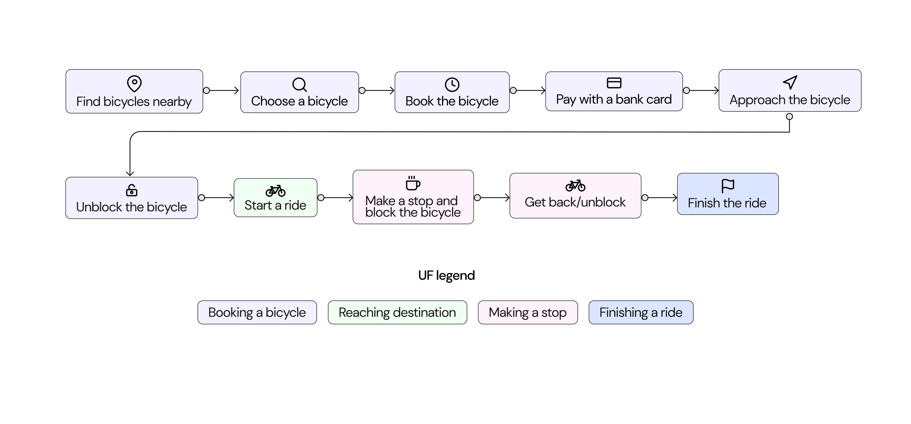
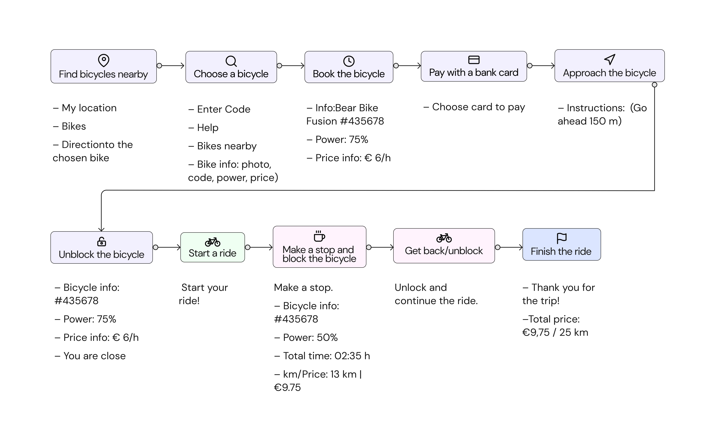

About the Project
Web Communications is a complete Digital Marketing Agency, "factory of ideas" that offers digital solutions for small, medium and large businesses.
The challenge
Redesigning Web Communications Website by eliminating pain points customers are experiencing in using the current version of the website so that to create an intuitive user interface.
My Role:
- UX Research
- User Flows
- Sketches
- UI Design & Interactive Prototyping
Project Duration: 7 - 15 January 2022.
The Design Framework: Double Diamond

For this project, I followed Double Diamond UX process, that focuses on users and their needs. Here are the key steps in the user-centered design process:
- Understand: Gathering insights about how users experience similar products and what issues they are facing. As well as defining the context in which they’ll experience the product.
- Specify: According to the conducted research, gathering insights about user’s needs and specifying the main issue the product aims to solve.
- Design: Designing solutions to those user problems. This part includes coming up with design ideas to address the identified user problems.
- Evaluate: Evaluating the solutions against the user’s needs by collecting feedback.
1. Understand
1.1 Stakeholder Interviews
I conducted an interview with stakeholders to to collect in-depth information about previous researches they have already done and gather insights about audience’s mindsets, motivation, behaviors, and issues they are facing.
Some of the key questions I considered during the interview include:- What product are we building?
- What are the user’s problems?
- How can we solve those problems?
- Are we aware of our own biases, and am I able to filter them as I do research?
1.2 The Problem Space
This part presents the problem space that consists of smaller elements, which all together can be considered as the anatomy of a problem.
1.2.1 The anatomy of the problem
1.2.3 The problem statement
2. Specify
This part presents synthesized data obtained during the interview with stakeholders.
"What is the problem we are trying to solve? "Why would users want to use this solution?"
2.1 The solution
Building the app that gives people the opportunity to rent bikes and e-bikes instead of stuffy public transport to ride around the city streets. Riders can pause a ride at any moment, leaving the vehicle booked so that to be able to resume it immediately afterward.
2.1.1 Persona creation
The initial hypothesis was narrowed to a single archetype of users and is presented in the section below:

2.2 User Flows.
Designing how users interact with a product is a key step in figuring out what are the features of the product and where the issues may be in task flows. The following charts demonstrate:
1. The user flows through the app.

2. The user flows through the app enriched with features and in-app info.

3. Design.
Low-Fidelity prototypes

High-Fidelity prototypes

What have I learned from this project?
- The process is everything. Even for small projects, thoughtful processes give a designer a roadmap to navigate through what seems unclear at first, especially when you’re starting out.